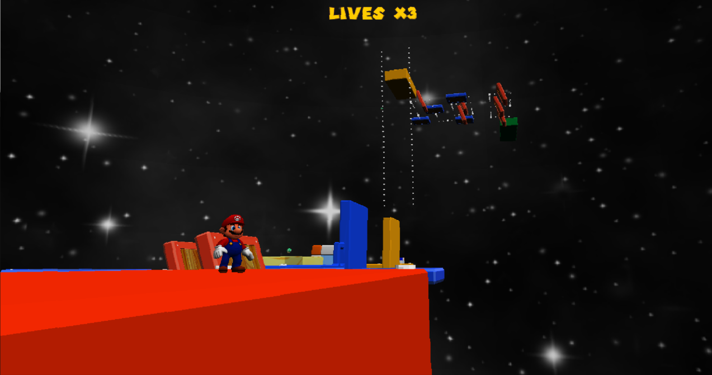

General Information
This is a page for me to showcase a lot of the stuff I have made in the past, but don't feel like writing a full article on.
Some of these are older than others but I learned a lot from each and every single one of them.
Got a minute
The first game I ever made in unity as part of the game mechanics course at DAE. It's a 2D platformer where you have a minute to get to the end. I leanred a whole lot just by messing around with Unity for this project and it still serves as a foundation for how I use the engine today. A lot of time was spent making the lights look cool and tuning the anvils.
Botanica
The second part of the game mechanics course where we had to make a game in Unreal 4. What originally started as just trying to get plants with genetics to work turned into a playground for me to mess with mechanics, I eventually ended up with a whole 3D movement system, first person point and click controls, a dialogue system, vending machines, closet doors, and a robust plant system.
Binding of Isaac
A recreation of the binding of Isaac I made in C++ using SDL for programming 2 at DAE. It has fully working stats, bombs, items, pickups, enemies and a level generator. I'm still quite proud of the result but as one of my first big projects the codebase behind it is messy.
Fmod Test
A smaller project where I spent a day learning how to implement Fmod into Unity for dynamic music (Music made by Voltriar von Fulchard which kindly made it for me.)
Dual rasterizer

Part of the graphics programming 1 course at DAE made in C++. This project consists of 2 big part, a software rasterizer and a hardware rasterizer using directX.
Mario Sunshine
As part of the graphics programming 2 course at DAE we needed to make a game in Overlord, a propriatery engine using C++ we needed to add a render pipeline to.
Minigin
In the programming 4 course we needed to make our own 2D engine basically from scratch and then recreate an arcade game with various gamemodes in that engine.
Zombie AI
Exam for the gameplay programming course at DAE where we needed to create steering behaviours in C++.